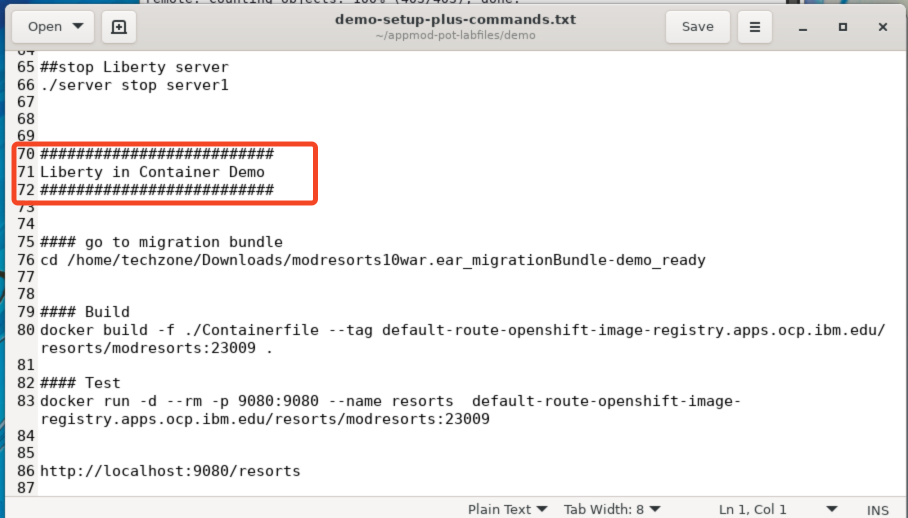
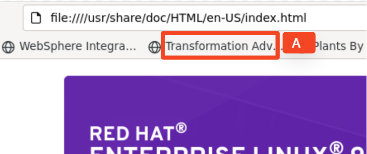

Deploy Java App to OCP
Hands-on demo guide
1 Introduction
This demo provides fundamental hands-on experience with modernizing existing Java applications to WebSphere Liberty, deployed into a container platform, such as Red Hat OpenShift.
The focus of this demo is on the practical aspects of how to use the deployment artifacts created by Transformation Advisor to speed up the process to deploy a Java app to Liberty running on OpenShift to achieve the objective for operation modernization.
Open Liberty is an application server designed for the cloud. It’s small, lightweight, and designed with modern cloud-native application development in mind.
Open Liberty supports the full MicroProfile and Jakarta EE APIs and is composable, meaning that you can use only the features that you need, keeping the server lightweight, which is great for microservices. It also deploys to every major cloud platform, including Docker, Kubernetes, and Cloud Foundry.
Operational Modernization gives an operations team the opportunity to embrace modern operations best practices without putting change requirements on the development team.
The scaling, routing, clustering, high availability, and continuous availability functionality that were previously provided by the application server middleware, can be provided by the container platform.
This allows the operations team to run cloud-native and modernized applications in the same environment with the same standardized logging, monitoring, and security frameworks.
The operation modernization solution provided by IBM Cloud Pak for Application is to move existing Java applications to Liberty containers.
IBM Cloud Transformation Advisor (TA) is an application modernization tool that is entitled through IBM Cloud Pak for Applications. Transformation Advisor helps you quickly evaluate on-premises Java EE applications for deployment to the cloud.
The Transformation Advisor tool provides the following value:
- Identifies the Java EE programming models in the app
- Determines the complexity of replatforming these apps by listing a high-level inventory of the content and structure of each app
- Highlights Java EE programming model and WebSphere API differences between the WebSphere runtime profile types
- Identifies Java EE specification implementation differences that might affect the app
- Generates accelerators for deploying the application to Liberty and containers in a target environment
Additionally, the tool provides a recommendation for the right-fit IBM WebSphere Application Server edition and offers advice, best practices, and potential solutions to assess the ease of moving apps to Liberty or newer versions of WebSphere traditional. It automatically generates a migration bundle with the artifacts you will need to containerize your application running on Liberty and deploy it to OpenShift Cloud Platform, accelerating application migrating to cloud process, minimizing errors and risks and reducing time to market.
Operator is the Kubernetes operator and specifically the Liberty operator. Liberty operator is used in the demo to deploy the app running on Liberty to the OpenShift Container Platform (OCP). The value of operators, in general, is that it really simplifies the amount of configuration required to do a deployment via all the YAML files that are typically required in Kubernetes. Additional benefits specifically to the Liberty operator is that it offers the automation of common tasks, like deploying, scaling, getting dumps, including thread dumps, core dumps and heap dumps, and gathering app logs. Another key benefit of the operator is that it provides out-of-the-box security capability, including certificate management integration with OCP and single sign-on delegation.
Kubernetes Kustomize is a tool that is native to Kubernetes that is available for customizing Kubernetes configuration. The idea is that the base configuration can be reused for deployments across different environments like development, staging, and production. The changes and modifications for different environments are provided as the adjustment snippets for the base configuration override. In this demo the deployment YAML file created by Transformation Advisor uses the Kustomize tool.
Mod Resorts app is a WebSphere application showing the weather in various locations. This app is initially developed for WebSphere traditional. In the demo it will be moved to Liberty in a container and deployed to OCP.
Demo Commands File lists all the commands used to setup and run the demo, so you can open it in a text editor and directly copy/paste the commands during the demo without going through the noVNC control pane. This file is provided to simplify the demo process. The file name is demo-setup-plus-commands.txt and it is in the /home/techzone/appmod-pot-labfiles/demo directory.
The commands used for this demo start from line 71 of the file.

In this demo, you are going to showcase how to rapidly deploy and configure the Mod Resorts app in Liberty running on an OpenShift Container Platform (OCP). you will show how easy it is to use IBM Transformation Advisors migration artifacts to accelerate the steps of the modernization journey, including build, configuration, and deployment. It will demonstrate that how quickly clients can realize the values from WebSphere Liberty and OCP, which provide greater deployment flexibility and operational efficiencies across the enterprise. You are also going to show how to config and use IBM License Service in OCP.
The objectives of this demo are to:
- Learn how to use the Transformation Advisor migration bundle to build the application into a container image
- Learn the role of Kustomize when deploying the migration bundle
- Learn how to deploy the app to OpenShift with a single command
- Review the deployment configuration and learn how to configure and use the IBM License Service tracking in OCP
2 Access Transformation Advisor
Talking Points To get started in the demo, I will go to IBM Transformation Advisor User Interface to look at the WebSphere applications Transformation Advisor analyzed. At the beginning of this demo, I have already gotten the Transformation Advisor Data Collector run on the WebSphere Application Server and gotten the analysis data loaded into the Transformation Advisor User Interface. Now let me go to Transformation Advisor User Interface to take a look at these applications. I will focus on the simple WebSphere applications Transformation Advisor identified. A simple application is the app that Transformation Advisor has assessed and indicated that no code changes are required for the app to run on Liberty. |
-
If the Transformation Advisor is not started yet, start it by running the command below in a terminal window. Otherwise skip this step.
cd /home/techzone/transformation-advisor-local-3.8.1 ./launchTransformationAdvisor.sh -
Type 5 and press Enter (A) to start the Transformation Advisor.

The Transformation Advisor is started after a few minutes.

Note: You might see an error message when launching the Transformation Advisor, just ignore it, because it will not impact the start of Transformation Advisor.
-
Access Transformation Advisor page from a web browser by clicking the Transformation Advisor (A) bookmark in the browser.

The Transformation Advisor page is displayed.
-
Click the Evaluation workspace (A) to open it.
The Evaluation workspace is displayed.
Notice that only WebSphere Liberty is selected as Migration target which is the platform you want to move the Mod Resorts app to.
3 Download Transformation Advisor migration plan
Talking Points Now I am in Transformation Advisor and as one can see there are five applications assessed. We have other demonstrations that showcase how to do an application assessment and how to interpret the results, but in this demo, I am going to focus primarily on the migration plan and what it is going to take to move an application from the WebSphere traditional to WebSphere Liberty running on a container platform. I want to focus on moving a simple application from WebSphere traditional to Liberty without any code change. As you can see, five applications have been assessed and four of these have been classified as simple, meaning no code change is required to move them to Liberty. I will choose the Mod Resort application that I have staged and set up for the demo. First, I will take a look at the Transformation Advisor migration plan which contains the artifacts that have been generated by Transformation Advisor as a result of scanning the application and the configuration in WebSphere Application Server (WAS). By doing so, I can understand the Liberty server configuration, the build file to build the container image as well as the YAML artifacts to deploy into a Kubernetes and OCP which are created by Transformation advisor. In this task, I need to simply download the migration plan to my local workstation. |
-
Scroll down (A) to locate the Mod Resort application in Transformation Advisor and click Migration plan (B).
-
The Migration plan page is displayed, click Download (A).
The Migration plan package named modresorts10war.ear_migrationBundle.zip is now downloaded to the Downloads directory of the demo VM. It contains the Liberty server configuration (server.xml), the build file (Containerfile) to build the container image as well as the YAML artifacts to deploy into a Kubernetes or OCP environment.
Note: The Transformation Advisor Migration plan package is also called the Transformation Advisor migration bundle.
4 Review the updated Transformation Advisor migration bundle
Talking Points The Mod Resorts app Migration bundle gets downloaded into the Downloads directory of the local file system from Transformation Advisor. In order to deploy the application to Liberty on OpenShift, I need to make a few changes to the bundle, including changing server configuration settings, adding app war file and update image file name and other settings in the deployment YAML file. To keep the demo simple, I will use a prepared migration bundle where I already applied the required changes. The prepared migration bundle package is in the modresorts10war.ear_migrationBundle-demo_ready directory. I will take a quick look at what are in the migration bundle:
Basically, I have the customization files for deploying the Mod Resorts app to Liberty container running on OCP and I will use these customized migration bundle files that Transformation Advisor generated. |
-
From the File manager window, click the modresorts10war.ear_migrationBundle-demo_ready (A) folder under the /home/techzone/Downloads directory to access it.

-
Review the contents in the directory. The migration bundle has all artifacts that you need to deploy the app to Liberty in container and to a Kubernetes environment. The Containerfile is the one to be used to create the Docker image.
-
Double-click target (A) folder to open it.
This directory contains the original app war file because there are no code changes needed to move it from WebSphere traditional to Liberty.
-
Click the src (A) folder and go to the main > liberty > config directory.
You see the Liberty configuration file, server.xml, which includes the server configuration for Mod Resorts to run in Liberty and a few minor modifications.
-
Click the deploy (A) folder to open it
You see two folders, k8s and kustomize, which contain the YAML files that Transformation Advisor created to deploy the app to a Kubernetes environment. While the k8s folder is used for deployments using the standard Kubernetes resources, kustomize is used for deployments using the Liberty operator.
-
Click the kustomize (A) folder and go to the base directory.
The base folder contains the YAML files used to deploy the app to a Liberty container running on OCP using Liberty operator.
5 Create the Docker container image
Talking Points To deploy the Mod Resorts app in Liberty on container, I need to build a container image for the app first. In this task, I am going to leverage the updated migration bundle artifices, and create a Docker container for the Mod Resorts app. I will show how easy it is to deploy the app in a local Docker container using the migration bundle artifices from Transformation Advisor. The first thing I am going to do is to go to the migration bundle directory structure and run the command to build the Docker image. The command will take the Containerfile that Transformation Advisor created and it is going to build the container image for the Mod Resorts app running on Liberty. After the image is created, I will verify it by starting a Docker container with docker run command. I will verify that the container is running and show I can access the Mod Resorts app running on Liberty in a local Docker container. After the image is created and verified, it is ready to be deployed to OCP in the next task. |
-
From a terminal window, go to the migration bundle directory with the following command:
cd /home/techzone/Downloads/modresorts10war.ear_migrationBundle-demo_ready -
Build Docker image with the following command:
docker build -f ./Containerfile --tag default-route-openshift-image-registry.apps.ocp.ibm.edu/resorts/modresorts:23009 .The Docker image is built.

Note: It can take some time to build the Docker for the first time, because the artifact must all be downloaded to the demo VM. Each subsequent build will be quicker as only the updated artifacts must be downloaded.
-
To verify the Docker image, run the following command:
docker images | grep resortsYou see that the Docker image is created.
-
After the Docker image is created, start the app container by using the following command:
docker run -d --rm -p 9080:9080 --name resorts default-route-openshift-image-registry.apps.ocp.ibm.edu/resorts/modresorts:23009 -
Run the following command to verify that the container is running:
docker ps | grep resortsYou see that the container is running.
-
To test the application, access its URL at http://localhost:9080/resorts (A) from a browser window.
The Mod Resorts application page is displayed.
-
Click WHERE TO? (A) and select San Francisco, USA (B).
The weather information is San Francisco is showing.
Now you have tested and verified that the app is running on Liberty container. What you will do next is to deploy the app in Liberty container to OCP.
6 Deploy the app to an OpenShift environment
Talking Points In the last section, I have built the Mod Resorts app on Liberty container image and tested it. Also in the previous section, we explored the Kubernetes kustomize structure coming from the Transformation Advisor migration bundle. In this section I will use the kustomize tool to deploy the Mod Resorts app to OCP. Before I do the deployment, I will stop the local Docker container first. In order to deploy the Mod Resorts app to OCP, I will push the image to an image registry which can be any image registry the clients are using. In this demo, I am going to use the internal registry that is available in the OCP environment. To push the image into OCP, I will need to log into the OCP environment, create a new project called resorts for the app and log into the internal OCP image registry. Then I will run a single command to push the app image from my local VM to the OCP image registry. After pushed the image into the OCP image registry, I will verify it either from command line or from the OCP web console. Now I am ready to deploy the app to OCP. With Transformation Advisor, this deployment process is made really simple by using the artifacts that Transformation Advisors created and using the kustomize tool in Kubernetes. One can configure and deploy all in a single command and a single step. After the app is deployed to OCP, we can access it through its route URL which is generated by the Liberty operator. |
-
From a terminal window, run the following command to stop the local Liberty container.
docker stop resortsThe local Liberty container is now stopped.
-
Log in to the OCP cluster with the following command:
oc login -u ocadmin -p ibmrhocp -
Create a new project called resorts for the Mod Resorts app with the following command:
oc new-project resorts -
Log in to the OCP image registry by using the following command:
docker login -u $(oc whoami) -p $(oc whoami -t) default-route-openshift-image-registry.apps.ocp.ibm.edu -
Now push the app image to the OCP image registry by using the following command:
docker push default-route-openshift-image-registry.apps.ocp.ibm.edu/resorts/modresorts:23009Note: It can take a few minutes to upload the image to the registry.
-
After the image is uploaded to the OCP image registry, use the following command to verify it:
oc get is -
Use the OCP web console to verify the image in the OCP image registry.
a. Access the OCP web console by clicking the OpenShift Console (A) bookmark in the web browser.
b. Accept the default Username/Password and click Log in (A).
After logged in, the OCP web console Home page is displayed.
c. Click Builds (A), select ImageStreams (B) and select resorts project (C), the app image is shown in the ImageStreams list.
d. Click the modresorts (A) to view its details.
The app image detail page is displayed.
Now you have verified that the app image is uploaded, you are ready to deploy the app to OCP using the YAML artifacts generated by Transformation Advisor.
-
From the OCP web console, click Workloads (A) and click Pods (B), you can see that currently there is no any app pod running.
-
From the OCP web console, click Workloads (A) and click Deployment (B), you can see that currently there is not any app deployment yet.
-
To deploy the Mod Resorts app to OCP, go to the terminal window and run the following commands:
cd /home/techzone/Downloads/modresorts10war.ear_migrationBundle-demo_ready cd deploy/kustomize oc apply -n resorts -k overlays/resorts_1.0This is a quick command run. Please note that the oc apply command is using the kustomize tool with a -k option and it is pointing to the overlays directory and a sub directory named resource_1.0, so it uses the YAML files in that overlay directory in addition to the base configuration that is in the base directory of the migration bundle.
-
To check the status of the deployment, you can run command:
oc get podsYou see that 8 pods are created and they are starting to run. You might need to run the same command a few times until all 8 pods are up running.
-
Once these pods are up and running, you need to get the application route so you can access it. To get the route, run command:
oc get route -n resortsYou see that the app route is: http://modresorts10war-resorts.apps.ocp.ibm.edu
-
With the app route information, you can access the Mod Resorts app in OCP from a web browser by entering the URL as: http://modresorts10war-resorts.apps.ocp.ibm.edu/resorts (A).
You see that the Mod Resorts app has been successfully deployed to the OCP environment and is running on the OCP now.
7 Review the deployment configuration and use the License service
Talking Points I have deployed the Mod Resorts app to the OCP environment with 8 pods running in the previous section. Now I will take a look at the deployment YAML file to review the deployment configuration. To deploy the Mod Resorts app to the OCP, I used the app YAML file in the base/kustomize folder of the migration bundle, which actually points to the app image that I pushed to the OCP image registry. In this particular deployment YAML file, I have specified to spin up 8 replicas of the Mod Resorts app and that is the reason we see the 8 pods running in the OCP environment. I added the license tracking information in the YAML file, so we see how the license service is working with the Liberty operator in OCP. In order to deploy the app and use the license service in OCP, I need to specify that I accept the license, where to get the entitlement from and what the Liberty edition I am using. I set the entitlement and the Liberty edition as: the Cloud Pak for Applications and Liberty Core. Additionally, I put a resource limit on the amount of CPU each pod can use and specified it as 1 virtual core. In general, the CPU limit should be set to a value for what the app needs, the value impacts not only the licensing but also the app deployment and overall CPU usage. I did this setting to demo the license tracking capability in OCP. Because in Cloud Pak for Applications Standard edition Liberty Core deployment is based on virtual processor cores in 8 to 1 ratio, meaning that based on the deployment configuration I set, even I have 8 Liberty Core pods running in OCP, I only consumed 1 virtual processor core of Cloud Pak for Applications. Finally, I will show how to access the License tracing service report in OCP. |
-
To review the deployment configurations, double-click the File Manager (A) icon on the Desktop.
-
Navigate to the /home/techzone/Downloads/modresorts10war.ear_migrationBundle-demo_ready/deploy/kustomize/base directory.
The contents in the directory are displayed.
-
Click the application-cr.yaml (A) file to open it for reviewing. This is the application customer resource YAML file.
The content of the YAML file is displayed.
As you can see from this configuration file, the deployment replica is set as 8. The app image is pointing to the image that you pushed to the OCP image registry. The license tracking information is added as Cloud Pak for Application and Liberty Core and the CPU resource limit is set at 1000m.
-
Now you can take a look at the license tracing service report about our license usage. To do it, go to the web browser and click the IBM License Service Status-with token (A) bookmark.
Note: you can also enter the IBM License Service Status-with token URL as: https://ibm-licensing-service-instance-ibm-common-services.apps.ocp.ibm.edu/status?token=dnwsnLNwvQ9ie4o9U5mpRhoG
The License Service Report is displayed.
The report shows that Liberty Core is running in 8 pods with one CPU per pod, so in total you consume 8 CPUs and the total Cloud Pak for Application license consumed is 1.
-
Let’s see that happened to the report if you remove the Mod Resorts app deployment from the OCP. To do it, run the following command from the terminal window to delete the deployment:
oc delete -n resorts -k overlays/resorts_1.0 -
Now the Mod Resorts app deployment is deleted, let’s see what happened in the License Service Report. Go back to the browser window and refresh (A) the License Service Report page.
As you can see there is nothing listed in the report anymore.
8 Summary
In this demo, you learned how to move a WebSphere app from WebSphere traditional to WebSphere Liberty container and deploy it to OCP using the deployment artifacts produced by Transformation Advisor in its migration bundle.
You explored the options for deployment:
- Liberty as an image running in a local container.
- Liberty as an image running in OpenShift.
You learned how to easily configure and deploy an app to OpenShift using Transformation Advisor migration bundle deployment artifacts which leverage the Kubernetes kustomize tool.
You learned how to enable the License service to the track the Liberty license usage in the deployment YAML and use Liberty operator and IBM License Service in OCP to access the License tracking report.